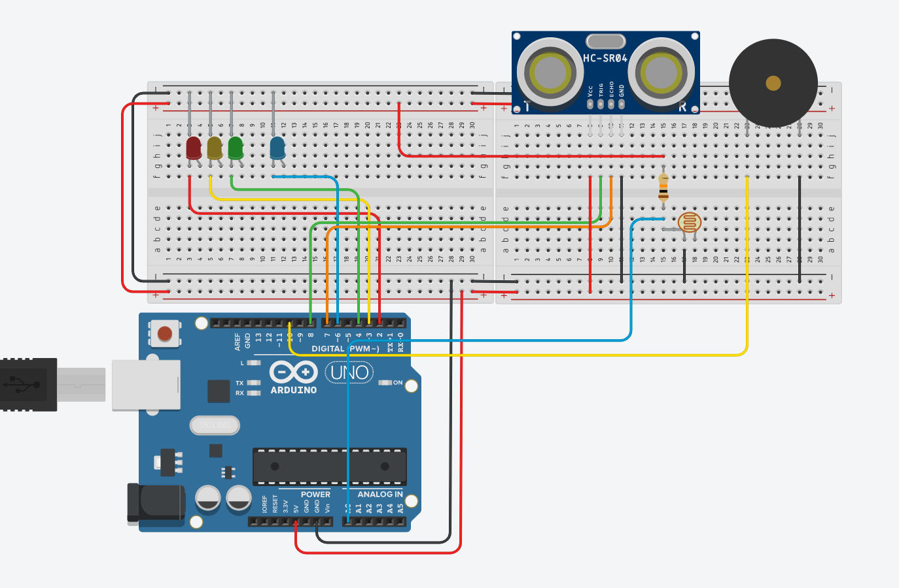
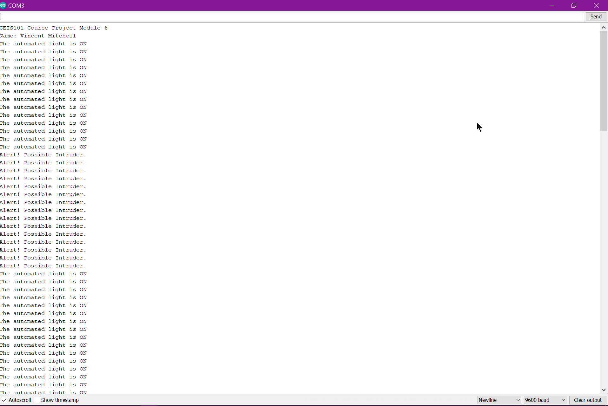
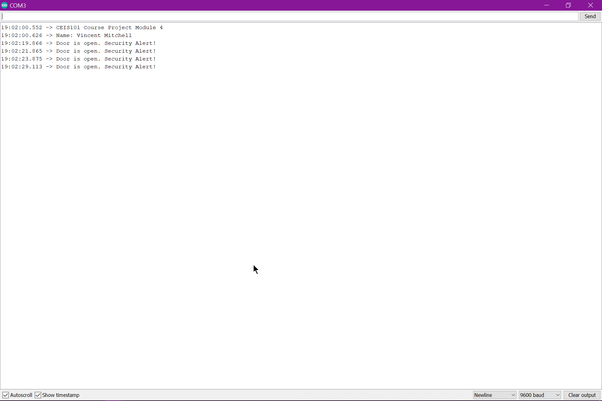
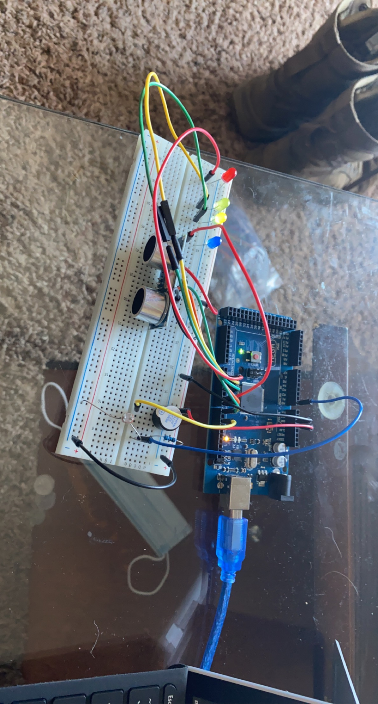

Project 1 | Home Security System
Student Developer
Overview
This project uses a combination of sensors, LEDs, a Piezo buzzer, and an Arduino MEGA 2560 microcontroller to create a simple home security system. The sensors detect the distance that an object is from the system and will indicate with a series of LEDs when the object is within a certain range. A blue LED will indicate when a circuit is broken indicating forced-entry on the system.
Features
- Distance detection using ultrasonic sensor
- Red, Yellow and Green LEDs to indicate the distance detection
- Piezo buzzer for audible alert of system trigger
- A photo-resistor to detect light levels
Software Development
The software for this project is developed using the Arduino IDE. A programming loop was implemented to output a repeating message to the serial monitor for the microcontroller. As the status is normal, the system operates in a passive state. If a person enters the view of the ultrasonic sensor, the system begins to send repeated messages of "Alert! Possible Intruder." to the serial monitor. If the blue wire is severed, the system will send messages indicating the "Door is open. Intruder Alert!".
Project Images



